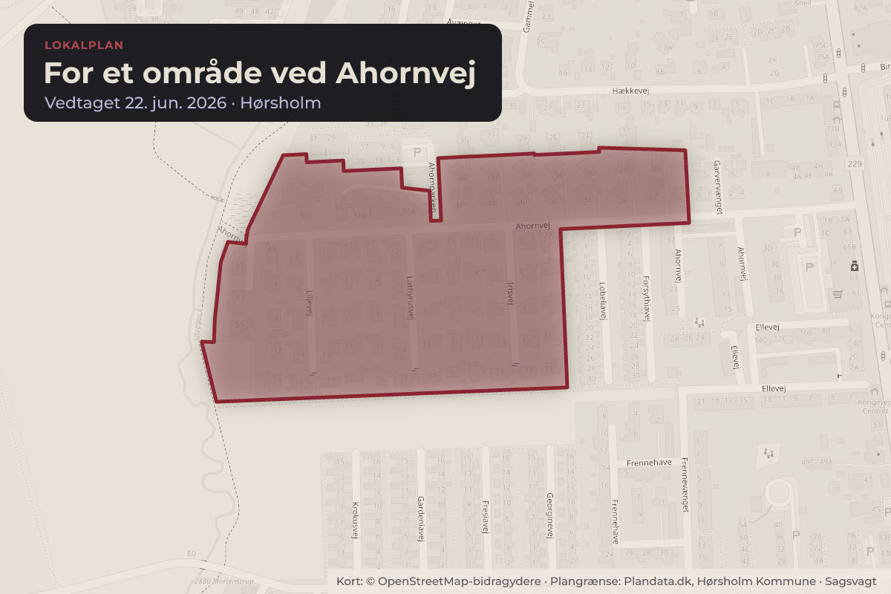
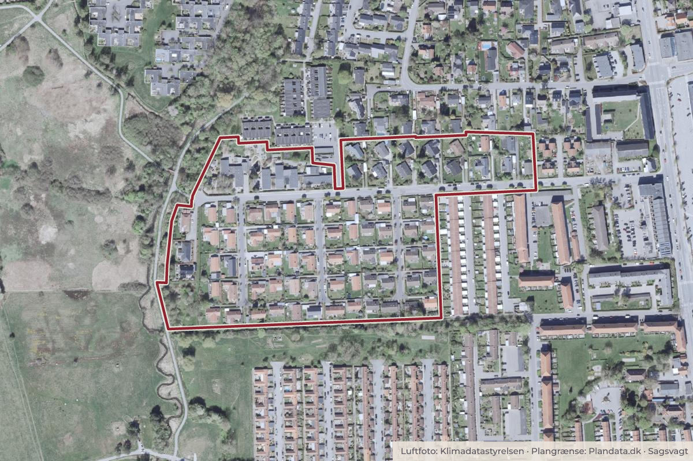

Besluttet 22. juni, Kommunalbestyrelsen, Hørsholm
Endelig vedtagelse af lokalplan 189 - for et område ved Ahornvej

Kort: © OpenStreetMap-bidragydere. Plangrænse: Plandata.dk, Hørsholm Kommune.

Kort fortalt
- Hvem
- Kommunalbestyrelsen, Hørsholm Kommune
- Hvornår
- Mandag 22. juni 2026
- Status
- Besluttet. 1. a-e tiltrådt.
Er noget forkert her? Skriv til os
Læs hele sagen Kommunens egen tekst
Baggrund
Forslag til Lokalplan 189 – for et område ved Ahornvej har været i offentlig høring i perioden fra
den 3. september 2025 til 5. december 2025. Høringsperioden blev forlænget grundet en fejl i
forbindelse med udsendelsesbrevene. Der er kommet 17 høringssvar. I dette dagsordenspunkt
fremlægges høringssvarene samt forslag til ændringer af lokalplanforslaget med henblik på
endelig vedtagelse af lokalplanen.
Forslag
Administrationen indstiller, at Byudviklingsudvalget over for Økonomiudvalget og
Kommunalbestyrelsen anbefaler:
1) At vedtage forslag til Lokalplan 189 – for et område ved Ahornvej endeligt med følgende
ændringer:
For delområde D gælder:
Bebyggelsesprocenten må ikke overstige 30 % for den enkelte ejendom.
Facaderne skal udføres i gul tegl og/eller træ i hvide, sorte, brune, grålige, sandfarvede
eller beige nuancer.
Tage må kun belægges med uglaserede teglsten i sorte, rødlige eller brunlige nuancer.
d. Introduktion til lokalplan
Historisk baggrund
Fra 1963-65 blev selve Ahornvej, Liljevej, Irisvej og Lathyrusvej samt kloakering anlagt som led
i byggemodningen af området.
Eksisterende vejsidetræer langs Irisvej, Lathyrusvej, Liljevej og Ahornvej skal bevares. Ved
fjernelse af træer skal de erstattes af en hjemmehørende træsort, der i færdigudvokset tilstand
bliver mellem 7-10 m. høj. Nye tilførte træer skal være af samme sort.
Sagsfremstilling
Administrationen har modtaget 17 høringssvar. Disse er samlet i en hvidbog, som fremgår af
bilag 1. En opsummering af høringssvarene samt administrationens bemærkninger hertil
fremgår af bilag 2. Forslag til Lokalplan 189 – for et område ved Ahornvej – er vedlagt som
bilag 3.
Efter høringsperioden har der, på baggrund af de indkomne høringssvar, været behov for
yderligere afklaring af lokalplanens indhold. I den forbindelse er der afholdt møde med
bestyrelsen for Grundejerforeningen Garvergården.
Dette førte til et efterfølgende dialogmøde, hvor alle borgere i delområde A, Garvergården, var
inviteret. På mødet deltog rådgiverne Line Stougaard, restaureringsarkitekt med speciale i
parcelhuse fra 1960’erne, samt Line Nørmark, ingeniør med speciale i energirenoveringer af
huse fra samme periode. Referat af mødet fremgår af bilag 4.
Rådgiverne har desuden medvirket til udarbejdelsen af en guide til Grundejerforeningen
Garvergården, som beboerne kan anvende i forbindelse med fremtidige renoveringer. Guiden
er vedlagt som bilag 5.
Høringssvarene omhandler følgende temaer:
A. Arkitektur og energirenovering
B. Bebyggelsesomfang og sekundære bebyggelser
C. Trafik, parkering og støj
D. Grundejerforening og servitutter
E. Ubebyggede arealer, beplantning og tekniske anlæg
F. Proces, myndighed og tilsyn
G. Temaer som ikke kan reguleres med lokalplanen
Administrationens bemærkninger til ovenstående temaer samt forslag til ændringer følger:
A) Arkitektur og energirenovering
Høringssvar: 5 høringsparter ønsker at bevare det arkitektoniske udtryk i delområde A. 6 parter
ønsker en mere lempelig lokalplan med større materiale- og farvefrihed samt mulighed for at
efterisolere husene på ydersiden.
Administrationens bemærkninger: lokalplanen imødekommer allerede en del af ønskerne, bl.a.
mulighed for ovenlys og meget specifikke lempelser til fuger og træværk. Administrationens
vurdering er, at lokalplanforslaget balancerer hensynet til bebyggelsens arkitektoniske
kvaliteter med nødvendige lempelser, der muliggør tidssvarende om- og energirenoveringer.
Lokalplanen lemper kravene til facader, materialitet og farver i forhold til gældende servitutter,
men husene må, jf. lokalplanen, ikke være pudsede, malede, filtsede eller vandskurede. Der
skal med lokalplanen fortsat anvendes gul tegl og træ, som vurderes at udgøre centrale
karaktertræk for Garvergårdens 1960’er-bebyggelse.
Forslag til ændringer i lokalplanen: det vurderes, at det er hensigtsmæssigt at udvide
mulighederne for farvesætning af træværk med hvid, beige og sandfarvet, idet der allerede
forekommer variation i farverne i bebyggelsen. Desuden anbefales sort tilføjet til
bestemmelserne, som mulig tagfarve for at sikre en bedre helhedsvirkning ved anlæggelse af
solceller, som lokalplanen muliggør.
B) Bebyggelsesomfang og sekundære bebyggelse
Høringssvar: i delområde A ønsker 6 borgere en øget mulighed for sekundær bebyggelse på
50 m2 uden begrænsninger til antallet af sekundære bebyggelser (standard mulighed jf. BR18
medmindre andet angives med f.eks. lokalplanen). 1 borger ønsker en øget
bebyggelsesprocent på 30% i delområde A. 1 borger ønsker en fast bebyggelsesprocent for
område D.
Administrationens bemærkninger: Administrationen anbefaler ikke at øge
bebyggelsesprocenten yderligere. Der er med de eksisterende servitutter fastlagt en
udnyttelsesgrad på 0,2 som med lokalplanen allerede er øget til 25%.
Forslag til ændringer i lokalplanen: det vurderes, at det er hensigtsmæssigt at udvide
mulighederne for sekundærbebyggelse, så de følger standarten i bygningsreglementet på 50
m2 uden begrænsning på antallet af sekundære bebyggelser. Administrationen vurderer, at det
vil give beboerne mere fleksibilitet, da husene er relativt små og ikke har nogen kælder.
Område D er underlagt kommuneplanrammens bebyggelsesprocent på 30%. Det anbefales, at
bebyggelsesprocenten indføres i lokalplanen for at sikre gennemsigtighed.
C) Trafik, parkering og støj
Høringssvar: Høringssvarene omhandler generelle bekymringer vedr. trafikken (fart, støj mm.)
på særligt Ahornvej, manglende parkeringspladser til daginstitutionens brugere samt ønsker
om tiltag for at afhjælpe trafikken (eksempelvis synlige fartbegrænsninger).
1 borger påpeger, at der er en fejl i det historiske afsnit i lokalplanens indledning.
Administrationens bemærkninger: Der planlægges med lokalplanen ikke for øget trafik i form af
flere boliger eller øgede byggemuligheder. Administrationen vurderer, at det ikke er muligt at
ændre de trafikale udfordringer med lokalplanen. Høringssvarene er givet videre til
vejmyndigheden, som i første omgang vil opsætte et skilt med den gældende fartbegrænsning
for at tydeliggøre dette.
Forslag til ændringer i lokalplanen: Administrationen anbefaler at det historiske afsnit rettes, så
det udelukkende fremgår hvornår Ahornvej, Liljevej og Lathyrusvej blev anlagt i 1963-65.
D) Grundejerforening og servitutter
Høringssvar Id. Nr.: 1226
Høringssvar: Høringssvarene omhandler lokalplanens bestemmelse vedr. pligten til at indgå i
en grundejerforening (delområde A) samt lokalplanens beføjelser ift. en grundejerforening.
Derudover efterspørges hvilke servitutter som aflyses. 1 borger påpeger, at der er en fejl i
lokalplanens historiske afsnit, da borgeren ikke mener, at det var Hørsholm Kommune, som
anlagde vejene Ahornvej, Irisvej, Liljevej og Lathyrusvej.
Administrationens bemærkninger: I forbindelse med udarbejdelsen af lokalplan 189 er den
eksisterende servitutbestemmelse vedr. kravet om en Grundejerforening for de 60 ejendomme
beliggende på Ahornvej, Lathyrusvej, Liljevej og Irisvej videreført. Dette skyldes, at de 60
ejendomme fortsat udgør en del af det samlede planlagte miljø i Garvergården, herunder
fællesarealer, stiforbindelser og et samlet arkitektonisk udtryk. Administrationen vurderer
derfor, at ejendommene stadig har en naturlig og planfaglig sammenhæng med resten af
området.
De servitutter som aflyses eller delaflyses, er listet under lokalplanens bestemmelser §13 stk.
Forslag til ændringer i lokalplanen: administrationen anbefaler at ændre det historiske afsnit, så
der blot står, hvornår vejene blev anlagt.
E) Ubebyggede arealer, beplantning og tekniske anlæg
Høringssvar: 4 borgere ønsker kravet om specifikke vejsidetræer ændret grundet rodskader på
belægning og kloak. 1 borger undrer sig over kravet om nedsivning på egen grund. Derudover
spørgsmål vedr. affaldscontaineres funktionalitet. 1 borger ønsker at kunne opsætte skilte vedr.
nabohjælp og lignende.
Administrationens bemærkninger: Bestemmelsen om lokal håndtering af regnvand og
kommunens planlagte separatkloakering supplerer hinanden ved at reducere belastningen af
kloaksystemet og forebygge oversvømmelser i overensstemmelse med spildevandsplanen.
Mindre skilte som nabohjælp og lignende er ikke i strid med lokalplanens bestemmelser.
Forslag til ændringer i lokalplanen: Administrationen anbefaler at ændre bestemmelsen vedr.
vejsidetræer, så der i fremtiden skal plantes valgfri hjemmehørende træsorter, som maksimalt
bliver imellem 7-10 m. høje. Nyplantede træer skal være af samme art.
F) Proces, myndighed og tilsyn
Høringssvar Id. Nr.: 1224, 1225.
1 borger spørger hvem der fører tilsyn af lokalplanens overholdelse. 1 borger spørger til
ekspropriation jf. planlovens §47, som står i lokalplanens bestemmelser §15.
Administrationens bemærkninger: Kommunen fører tilsyn med overholdelse af lokalplanen og
kan ved ulovlige forhold kræve lovliggørelse. Lokalplanens bestemmelser er bindende for
fremtidige forhold, men ikke for lovligt eksisterende anvendelse.
Muligheden for ekspropriation efter planlovens § 47 er en standardbestemmelse, der alene
sikrer planens gennemførelse i særlige tilfælde. Bestemmelsen om ekspropriation er altid
gældende, men meget sjældent anvendt i praksis.
G) en Temaer som ikke kan reguleres med lokalplan
Høringssvar Id. Nr.: 1226
Der er modtaget høringssvar vedrørende tidligere beslutninger om vejforhold, trafikdæmpning,
parkeringspladser, støjforhold samt placering og omfang af eksisterende daginstitutioner.
Indsigelserne vedrører forhold, som enten er besluttet og gennemført forud for lokalplanen eller
reguleres efter anden lovgivning end planloven.
Lokalplanen ændrer ikke på eksisterende vej-, trafik- eller institutionsforhold og medfører ikke
øget trafik eller støj.
Ønsker om ændringer i trafikdæmpende foranstaltninger er videreformidlet til vejmyndigheden.
Høringssvarene giver ikke anledning til ændringer i lokalplanforslaget.
Samlet vurdering
Administrationen vurderer, at lokalplanen understøtter en balanceret udvikling af området med
respekt for det eksisterende miljø, arkitekturen imens der samtidig gives muligheder for at
energirenovere husene.
Administrationen har i forbindelse med udarbejdelsen af lokalplan 189 været i løbende dialog
med berørte borgere. Der er konkret afholdt 4 borgermøder med henblik på at sikre, at
lokalplanens formål og borgernes ønsker er forenelige.
Der har efter høringsperioden været behov for et ekstra dialogmøde mellem kommunen og
beboerne i delområde A (Garvergården). Mødet blev afholdt 11. marts og formålet med mødet
var dels at kvalificere lokalplanen, dels at give beboerne et faglig grundlag for fremtidige
renoveringer med udgangspunkt i bebyggelsens arkitektur. For at kvalificere samtalen deltog
restaureringsarkitekt Line Stougaard med speciale i parcelhuse fra 1960’erne og ingeniør Line
Nørmark med speciale i energirenoveringer af huse fra 1960’erne.
Lokalplanens bestemmelser er således kvalificeret af borgernes høringssvar og rådgivernes
input.
Dialogmødet var præget af aktiv deltagelse og konstruktive drøftelser med mange relevante og
faglige spørgsmål. Administrationen modtog efterfølgende flere positive, uformelle
tilbagemelding fra deltagerne, som gav udtryk for, at mødet havde været informativt og givet ny
forståelse af områdets kvaliteter og muligheder.
Sagens tidligere behandling
BYU 12.09.2024: Igangsættelse af lokalplanarbejdet ved Garvergården
BYU 19.06.2025: Beslutning om at sende forslag til Lokalplan 189 for et område ved Ahornvej i
offentlig høring
Behandling i Byudviklingsudvalget 21. maj 2026
1) Tiltrådt 1a. - 1e.
Behandling i Økonomiudvalget 4. juni 2026
Indstillingerne godkendt med 6 (A, C, I, V) stemmer for og 1 (E) undlod at stemme.
Stine Pagh deltog ikke under punktet.
Beslutning
1. a-e tiltrådt.
Kilde: Hørsholm Kommune, Kommunalbestyrelsen, referat fra mødet mandag 22. juni 2026, punkt 11. Læs den originale sag hos kommunen.